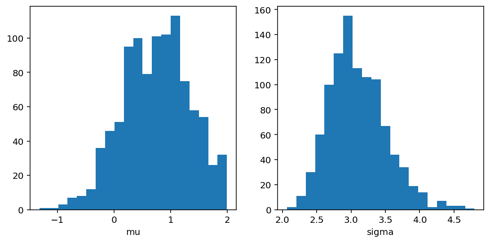

Code
import elfiThis section contains details of how to use jupyter notebooks within vscode.
From the terminal create a virtual environment somewhere approporiate (I’ve used the python_tutorials directory, i.e. where the notebook is stored)
python -m venv venv
source venv/bin/activateInstall modules required:
python -m pip install jupyter ipykernel jupyterlab(restart vscode if you did the above in a vscode terminal, so it can pick up the libraries)
If you’re using VScode: Load/create the notebook and set the notebook kernel to the vnenv you’ve created (button at the top right of the notebook)
Install other libraries into the virtual environment as required (python -m pip install numpy, etc.)
So others can use your notebooks… generate requirements.txt in the root of the repository: pip freeze >requirements.txt (putting this in the repo root will mean Binder picks it up when building the binder image)
As a new user of the notebook, you can then install the required libraries by activating your own virtual environment and installing the libraries with pip install -r requirements.txt
Create a YAML header as the first cell in the notebook, containing information needed for Quarto:
---
title: Python demo using ELFI
author: ELFI
date: 2022-06-01
format:
html:
code-fold: true
jupyter: python3
---
Set this cell type to “raw” (Jupyter: Cell, Cell type, Raw NB Convert, vscode: click the language in the lower right of the cell, and change to “raw”)
To render the notebook use: quarto render (or quarto render --execute to re-run the cells in your notebook)
Commit the resulting html files and push to github
(This is optional and only needed if you’d like others to be able to play with the underlying notebook code in an interactive environment)
Link to this notebook’s Binder:

This notebook has code-fold: true to hide code by default; we can override this on a cell by cell basis with the special #| comment, e.g. #|code-fold: false.
This page lists the options we can apply to each cell: https://quarto.org/docs/reference/cells/cells-jupyter.html
First ensure you have installed Python 3.5 (or greater) and ELFI. After installation you can start using ELFI:
import elfiELFI includes an easy to use generative modeling syntax, where the generative model is specified as a directed acyclic graph (DAG). Let’s create two prior nodes:
we use the code-fold option discussed above, so the user can always see this code
mu = elfi.Prior('uniform', -2, 4)
sigma = elfi.Prior('uniform', 1, 4)The above would create two prior nodes, a uniform distribution from -2 to 2 for the mean mu and another uniform distribution from 1 to 5 for the standard deviation sigma. All distributions from scipy.stats are available.
For likelihood-free models we typically need to define a simulator and summary statistics for the data. As an example, lets define the simulator as 30 draws from a Gaussian distribution with a given mean and standard deviation. Let’s use mean and variance as our summaries:
import scipy.stats as ss
import numpy as np
def simulator(mu, sigma, batch_size=1, random_state=None):
mu, sigma = np.atleast_1d(mu, sigma)
return ss.norm.rvs(mu[:, None], sigma[:, None], size=(batch_size, 30), random_state=random_state)
def mean(y):
return np.mean(y, axis=1)
def var(y):
return np.var(y, axis=1)Let’s now assume we have some observed data y0 (here we just create some with the simulator):
# Set the generating parameters that we will try to infer
mean0 = 1
std0 = 3
# Generate some data (using a fixed seed here)
np.random.seed(20170525)
y0 = simulator(mean0, std0)
print(y0)[[ 3.7990926 1.49411834 0.90999905 2.46088006 -0.10696721 0.80490023
0.7413415 -5.07258261 0.89397268 3.55462229 0.45888389 -3.31930036
-0.55378741 3.00865492 1.59394854 -3.37065996 5.03883749 -2.73279084
6.10128027 5.09388631 1.90079255 -1.7161259 3.86821266 0.4963219
1.64594033 -2.51620566 -0.83601666 2.68225112 2.75598375 -6.02538356]]Now we have all the components needed. Let’s complete our model by adding the simulator, the observed data, summaries and a distance to our model:
# Add the simulator node and observed data to the model
sim = elfi.Simulator(simulator, mu, sigma, observed=y0)
# Add summary statistics to the model
S1 = elfi.Summary(mean, sim)
S2 = elfi.Summary(var, sim)
# Specify distance as euclidean between summary vectors (S1, S2) from simulated and
# observed data
d = elfi.Distance('euclidean', S1, S2)If you have graphviz installed to your system, you can also visualize the model:
# Plot the complete model (requires graphviz)
elfi.draw(d).. Note:: The automatic naming of nodes may not work in all environments e.g. in interactive Python shells. You can alternatively provide a name argument for the nodes, e.g. S1 = elfi.Summary(mean, sim, name='S1').
We can try to infer the true generating parameters mean0 and std0 above with any of ELFI’s inference methods. Let’s use ABC Rejection sampling and sample 1000 samples from the approximate posterior using threshold value 0.5:
rej = elfi.Rejection(d, batch_size=10000, seed=30052017)
res = rej.sample(1000, threshold=.5)
print(res)Progress [===-----------------------------------------------] 7.1% CompleteProgress [=======-------------------------------------------] 15.4% CompleteProgress [============--------------------------------------] 25.0% CompleteProgress [================----------------------------------] 33.3% CompleteProgress [====================------------------------------] 41.7% CompleteProgress [=======================---------------------------] 46.2% CompleteProgress [=============================---------------------] 58.3% CompleteProgress [=================================-----------------] 66.7% CompleteProgress [=====================================-------------] 75.0% CompleteProgress [=========================================---------] 83.3% CompleteProgress [=============================================-----] 91.7% CompleteProgress [==================================================] 100.0% Complete
Method: Rejection
Number of samples: 1000
Number of simulations: 120000
Threshold: 0.492
Sample means: mu: 0.748, sigma: 3.1
Let’s plot also the marginal distributions for the parameters:
import matplotlib.pyplot as plt
res.plot_marginals()
plt.show()